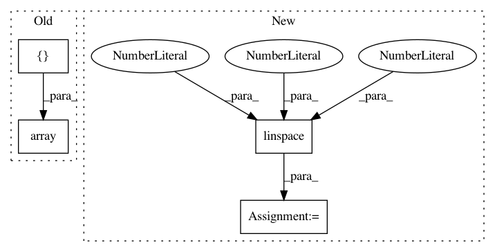

36159c6aece4ec07aad8750f0a0b1f8465c32f78,examples/lines_bars_and_markers/errorbar_limits_simple.py,,,#,14
Before Change
plt.errorbar(x, y, yerr=0.1, uplims=True)
y = np.sin(np.arange(10.0) / 20.0 * np.pi) + 2
upperlimits = np.array([1, 0] * 5)
lowerlimits = np.array([0, 1] * 5)
plt.errorbar(x, y, yerr=0.1, uplims=upperlimits, lolims=lowerlimits)
plt.xlim(-1, 10)
After Change
fig = plt.figure()
x = np.arange(10)
y = np.sin(x / 20 * np.pi)
yerr = np.linspace(0.05, 0.2, 10)
plt.errorbar(x, y, yerr=yerr)
plt.errorbar(x, y + 1, yerr=yerr, uplims=True)
In pattern: SUPERPATTERN
Frequency: 3
Non-data size: 4
Instances
Project Name: matplotlib/matplotlib
Commit Name: 36159c6aece4ec07aad8750f0a0b1f8465c32f78
Time: 2019-01-10
Author: 2836374+timhoffm@users.noreply.github.com
File Name: examples/lines_bars_and_markers/errorbar_limits_simple.py
Class Name:
Method Name:
Project Name: statsmodels/statsmodels
Commit Name: 594882a5c0da72e0175319ea7cb07d373687ff18
Time: 2020-07-22
Author: kevin.k.sheppard@gmail.com
File Name: statsmodels/graphics/gofplots.py
Class Name:
Method Name: _fmt_probplot_axis
Project Name: scikit-learn-contrib/DESlib
Commit Name: cd1a5446ce793d09f28d021c466a279301eb51f0
Time: 2018-04-01
Author: rafaelmenelau@gmail.com
File Name: deslib/des/meta_des.py
Class Name: METADES
Method Name: estimate_competence